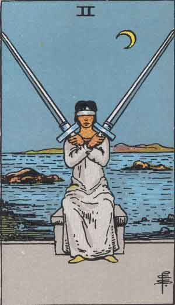

Two of Swords

Upright
Choices, Stalemates
- Decisions should be made with the best intentions using unconditional positive regard.
- A choice doesn't go away just because it isn't made. Avoidance may lead to greater conflict.
- Try breaking from a usual way of thinking to help consider alternative ideas.
- Sometimes you have to disagree and commit. When you commit, be wholehearted.
- When two choices appear equally good, their outcomes shouldn't be that different.
- Aim towards your highest vision. You assign value to all you hear, see and experience. Aim with intent and understanding.
Reversed
Indecision, Confusion, Overload
What do you do when a choice you have to make has only negative result options? What happens when you feel like you are playing peacemaker between two people? Slow it down, man, slow your roll! Consider your options carefully. How did you get here? Can you shed the weight of other people's problems? Listen to incoming advice and select the most relevant and helpful parts. Let you guide yourself, driven by your truth. Are there blinders applied?
- Boldness has magic, power, and genius in it.